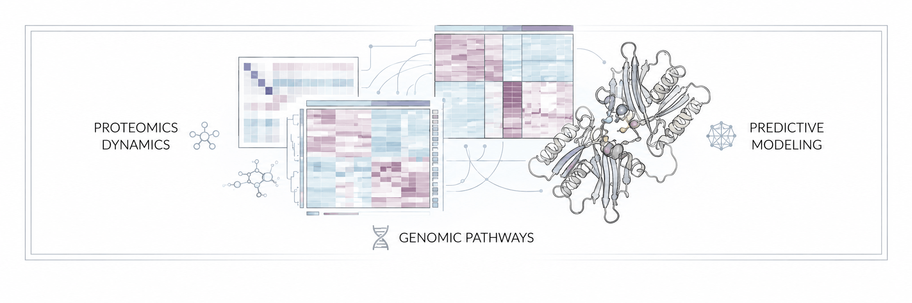

BIOINFORMATICS COMPANY

A U.S.-based R&D company advancing in silico discovery across immunology, proteomics, genomics, peptide science, molecular medicine, longevity, and fundamental biomedical research through AI-driven modeling and Web3-native scientific infrastructure.